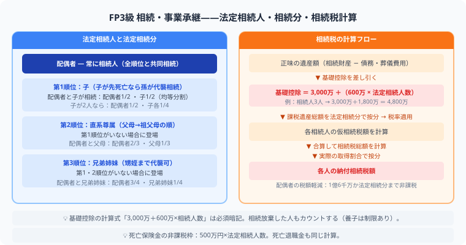

FP3級 相続・事業承継とは？
法定相続分の計算から相続税・贈与税まで完全解説
相続・事業承継は、法定相続人、法定相続分、相続税、贈与税を扱う分野です。家族関係を図にして、誰が相続人になるかを先に判断できるようにしましょう。
- 相続はまず「誰が相続人か」を家族関係図で確定させる
- 相続税の基礎控除は「3,000万円＋600万円×法定相続人の数」
- 死亡保険金の非課税枠は「500万円×法定相続人の数」
- 贈与税の暦年課税は年間110万円まで非課税
頻出テーマ

相続の最初のステップは「誰が相続人か」を確定すること。基礎控除「3,000万＋600万×法定相続人数」は必須暗記で、死亡保険金の非課税枠「500万×法定相続人数」とセットで覚えましょう。
| テーマ | ポイント |
|---|---|
| 法定相続人 | 配偶者は常に相続人、血族は順位で判断 |
| 法定相続分 | 配偶者と子、父母、兄弟姉妹の組み合わせ |
| 遺留分 | 最低限保証される取り分 |
| 相続税 | 基礎控除、死亡保険金の非課税枠 |
| 贈与税 | 暦年課税、基礎控除、相続時精算課税 |
勉強のコツ
- 相続順位は、子、直系尊属、兄弟姉妹の順に確認する
- 配偶者は常に相続人になる
- 相続税の基礎控除は「3,000万円 + 600万円 × 法定相続人の数」
- 贈与税は年間110万円の基礎控除をまず押さえる
まとめ
- 相続は家族関係図を描くと安定する
- 法定相続人と法定相続分が最重要
- 相続税・贈与税は基礎控除から覚える
法定相続分の計算例と試験頻出パターン
FP3級では「被相続人の家族構成」から法定相続分を計算する問題が頻出です。以下のパターンで練習しましょう。
- 配偶者＋子2人：配偶者1/2、子はそれぞれ1/4（子の合計1/2を均等分割）
- 配偶者＋親（父のみ存命）：配偶者2/3、父1/3
- 配偶者＋兄弟姉妹：配偶者3/4、兄弟姉妹の合計1/4
よくある間違い
- 内縁の配偶者は相続人にならない：法律上の婚姻関係がない場合、法定相続人にはなれません。
- 代襲相続の範囲：子が先に死亡していた場合は孫が代わりに相続（代襲相続）できますが、兄弟姉妹の代襲相続は甥・姪まで（再代襲はない）。
- 相続放棄で人数が変わる：相続放棄した人は最初から相続人でなかったことになり、基礎控除の計算に使う「法定相続人の数」には含めます（ここが引っかけポイント）。
よくある質問
FP3級の相続で一番よく出る問題は何ですか？
「法定相続人の確定」と「法定相続分の計算」が最頻出です。次いで「相続税の基礎控除（3,000万＋600万×人数）」と「贈与税の年間110万円基礎控除」がよく出ます。家族関係図を素早く読み取る練習をしておくと安定します。
贈与税の「暦年課税」と「相続時精算課税」はどう違いますか？
暦年課税は毎年110万円の基礎控除があり、超えた分に贈与税がかかります。相続時精算課税は60歳以上の親から18歳以上の子への贈与に適用でき、2,500万円まで贈与税を猶予し、相続時に相続税として精算する制度です。一度選択すると暦年課税に戻れない点に注意が必要です。
遺留分とは何ですか？
遺留分は、法定相続人が最低限受け取れる権利として法律で保障された取り分です。兄弟姉妹には遺留分はありません。配偶者・子・親には遺留分があり、その割合は法定相続分の1/2です。遺言で「全財産を赤の他人に」と書いても、遺留分は遺留分侵害額請求権として行使できます。
死亡保険金は相続税の対象になりますか？
死亡保険金は「みなし相続財産」として相続税の対象になりますが、非課税枠があります。非課税限度額＝500万円×法定相続人の数です。例えば相続人が3人なら1,500万円まで非課税です。この公式はFP3級で頻出なので必ず覚えましょう。
📋 まとめ：相続・事業承継 早見表
お金の知識は、知っているだけで人生の選択肢が増えます。
この記事が少しでも参考になったら、この下にある【いいねボタン】をポチッと押してもらえると、めちゃくちゃ嬉しいです！ そして、Study Questで今日の学習時間を記録して、合格までの成長を「見える化」していきましょう。